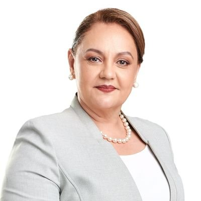

Lineth Saborío Chaverri
Partido: Unidad Social Cristiana
Pensamiento: Al tenor de las Leyes, sus Estatutos y Reglamentos, el Partido Unidad Social Cristiana:
-Tiene carácter nacional y está organizado de acuerdo con la Constitución Política y la legislación electoral vigente.
-Se inspira en el Humanismo y los principios socialcristianos y se enmarca en las aspiraciones de libertad, solidaridad, progreso, democracia, justicia social y paz que caracterizan al pueblo costarricense.
-No subordinará su acción política a las disposiciones de organizaciones o estados extranjeros, y promete formalmente respetar y defender la Constitución Política, el Estado Social de Derecho y el sistema de democracia representativa de la República de Costa Rica.